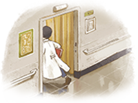

他走的第1500天 早晨咖啡依然熱著
「4年又45天」，譚敦慈不假思索的，說出林杰樑已經離開的天數。聽診器、手機，還有衣櫥裡的襯衫和醫師袍，卻仍井然有序在生前習慣的位置上。
譚敦慈每天早上與林杰樑喝一杯黑咖啡的習慣，依然持續著，「一杯他的、一杯我的，我們在餐桌上喝完，就放到他牌位前。」
「我知道，常有人說我放不下」，譚敦慈面對這個問題，沒有絲毫停頓或閃避，直勾勾地看著採訪團隊回答：
「我不懂放下是甚麼，也不知道身而為人，應該要放下甚麼。但我知道的是，林杰樑曾經存在，他的精神跟力量，甚至都依然還在，唯獨一件事情，是我看不到他。」
她曾絞盡腦汁去想，林杰樑走得倉促，有沒有話還沒對她說，「後來我想，他在的每一天，我都很努力的照顧他，每一天，他也都對我這麼好，其實是無憾了。」
一塵不染的療程
面對思念洶湧，許多人麻木自己、塵封回憶。但譚敦慈與兩個兒子，卻都不想這麼做，「刻意把過去一切忘得一乾二淨，不符合人性，我們也做不到」。
譚敦慈至今仍時常下意識拿起電話，想打給林杰樑，兩人過去形影不離，甚至買菜和倒垃圾也相隨，觸景傷情，她一感覺到情緒湧上，就分散注意力，不讓自己陷入悲傷泥沼。
「哭泣的時間，我倒不如拿來站起來、往前走，無論是去工作或運動，還是整理家裡，我覺得都OK，就是不要坐在家裡哭，沒有任何實質助益，失去的也不會回來。」
排得滿滿的工作日程，若有空閒，譚敦慈就出門去快走，加上每天地毯式的徹底打理家務，她讓自己沒時間想太多。
譚敦慈熟練的站上沙發、掀開冷氣機，一把摸過冷氣濾網，「我們家連這種地方，都沒有灰塵的」，攤開手，上頭沒有一點髒汙。
我獨立樂觀 但永遠不可能走過這段路
譚敦慈時時刻刻提醒自己，林杰樑生前最欣賞，就是她的正向思考能力，還有樂觀獨立的性格。
林杰樑剛過世時，譚與兒子每天自靈堂返家後，就出門快走。一日被鄰居騎著機車擋住去路斥責，「林醫師還在往生室，妳就帶小孩在這裡快走，成何體統！」
譚敦慈說，對方的出發點是善意，但從外界看進一個家庭，難免有死角。「他們不知道的是，八月的林口微風徐徐，小兒子曾說，『爸爸就像這個風，在我們身邊』。」
「這對一個連哭都已經哭不出來的孩子而言，是多大的安慰，怎麼捨得再去剝奪呢？」但譚敦慈當下僅向鄰居致謝也致歉，解釋自己與林杰樑，有一套生活方式。
看似永遠理性與樂觀，但譚敦慈話鋒一轉、難得感性的說，「其實我永遠不可能走過這段路」。
「生死對我來說是這樣，我們大家都走在同一條路上，有人先停下來，有人繼續往前走」。
昨日的甜美回憶，很難不成為今日心頭上的大石。但她也用這些石頭，一磚一瓦砌實自己的心志，沒辦法真的「走過」甚麼，但還是支撐好自己，繼續向前走。
我不為經營「譚敦慈」 做任何一件事
婚後，林杰樑領譚敦慈踏入毒物實驗室，擔任研究助理，夫妻倆上下班形影不離，林杰樑任何學術新知，也第一個與她討論，一路走過30年，成就譚敦慈在毒物研究領域的專業。
譚敦慈與林杰樑大弟子、現林口長庚臨床毒物科主任顏宗海，念及他生前為不捨晝夜做研究，資料都還在手邊，「我們覺得我們有社會責任」，繼續捍衛國人食安。
毒物團隊與民眾對談，林杰樑臉書粉絲團是一大出口，但難免收到情緒性留言，指責譚敦慈利用亡夫名聲，她一一向這些讀者道歉，讓他們感到不舒服，但她也解釋，這是她以家屬、妻子的身份，懷念與延續林杰樑生命意義的方式。
「我不會為了經營譚敦慈而去做任何一件事，這對我來講毫無意義，但是我會為了讓林杰樑存在，一直努力下去。」
至於質疑粉絲團專業的批評，她則強調，幕後不是她一人，還有長庚、北醫、榮總等跨科別的醫師團隊，針對時事作研究與檢驗後撰文，經彼此不斷轉寄修改，內容才會正式上傳到臉書，帶給民眾正確的醫學觀念。

能讓人這麼懷念的人
林杰樑離世多年，至今每逢食安風波，媒體和民眾還是下意識想起他。今年網友討論「最希望那個名人復活？」，有台灣良心之稱的林杰樑，是熱門關鍵字。
譚敦慈說，大兒子受林杰樑影響，也攻讀腎臟科，身邊帶著爸爸的白袍，時刻提醒自己當這樣的醫生，每當面對毒物學侃侃而談，同儕師長都讚他像極林杰樑風骨，「兒子說，這是對他最大的鼓勵」。
許多醫師現在寫的論文，仍掛上林杰樑的名字。醫師升等、當上教授，第一件事就是打給譚敦慈，希望能親自上香告訴林杰樑，因為覺得有他指導，才能有今天的成就。
譚敦慈眼底一抹淺淺的笑意，「一個人能讓人這麼懷念，真的很特別，想到這些，我就覺得他的一生，好值得喔。」